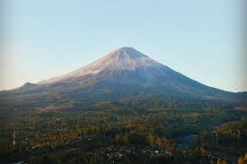
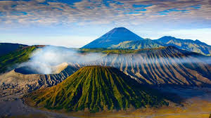
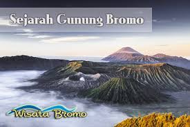
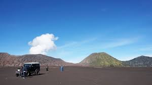

Gunung Kelimutu

Nama besar Gunung Kelimutu memang udah nge-hits banget di seluruh dunia. Gunung berapi ini berlokasi di Pulau Flores,
Nusa Tenggara Timur. Yang bikin unik, Gunung Kelimutu ini punya tiga danau kawah dengan tiga warna yang berbeda.
Ada kawah berwarna merah, biru, dan putih di Gunung Kelimutu. Sumber: blog.tiket.com
Gunung Semeru

Gunung Semeru adalah yang paling tinggi di Pulau Jawa dan bisa dikatakain sebagai gunung paling ramai di daki sepanjang
tahun. Tentu saja alasan yang cukup masuk akal karena keindahan alam di sini memang patut untuk dikunjungi. Selain itu,
terdapat danau alami yang berada di ketinggian 2.400 mdpl dan dikenal dengan nama Ranu Kumbolo. Ada pula jalur Tanjakan
Cinta dan Oro-oro Ombo yang ditumbuhi oleh bunga lavender yang terkenal di kalangan para pendaki. Sumber: reddoorz.com
Gunung Bromo

Gunung Bromo adalah salah satu gunung yang sangat populer di kalangan wisatawan karena menawarkan keindahan alam Indonesia
yang menakjubkan. Meskipun berstatus sebagai gunung berapi aktif, Bromo tidak pernah sepi dari pengunjung.
Ada sejumlah spot menarik di sekitar kawasan Gunung Bromo yang menjadi favorit wisatawan. Salah satunya, Puncak Penanjakan
yang kerap menjadi lokasi untuk menyaksikan panorama matahari terbit. Puncak Penanjakan telah dilengkapi dengan berbagai fasilitas,
mulai dari toilet, Mushola, hingga kios makanan. Sumber: traveloka.com
Legenda Gunung Bromo

Sejarah Gunung Bromo | Legenda Bromo Tengger – wisatabromo.com. konon pada jaman dahulu kala ketika kerajaan majapahit mengalami
serangan dari berbagai daerah penduduk pribumi kebingungan untuk mencari tempat tinggal hingga pada akhirnya mereka terpisah menjadi
2 bagian yan pertama menuju ke gunung Bromo, kedua menuju Bali. Ke 2 tempat ini sampai sekarang mempunyai 2 kesamaan yaitu sama – sama
menganut kepercayaan beragama Hindu. Sumber: wisatabromo.com
Padang Pasir Berbisik Bromo

Pasir Berbisik Bromo adalah obyek wisata gunung bromo Jawa Timur, merupakan sebuah lautan pasir luas indah yang berada di sekitar Kaldera
Gunung Bromo, Pasir Berbisik juga merupakan deretan di salah satu tempat lokasi wisata bromo yang biasa dikunjungi oleh wisatawan yang
liburan di Gunung Bromo.
Adapun Asal usul Pasir Berbisik Bromo ini sangat berkaitan dengan sebuah film yang dibuat oleh sutradara yang bernama Garin Nugroho, seorang
sutradara terkenal asal negara Indonesia beliaulah pencetus pertama kali nama Pasir Berbisik Bromo, di dataran Lautan Pasir Bromo inilah
beliau menjadikan sebuah lokasi shooting dari sebuah film yang berjudul “Pasir Berbisik”. Sejak saat itu lautan pasir wisata Bromo yang terdapat
di kawasan wisata Bromo ini terkenal dengan nama sebutan pasir berbisik, Sesuai dengan namanya, karena di Laut Pasir Bromo ini ketika angin bertiup
kencang, deru angin yang membawa butiran-butiran pasir bagaikan bisikan-bisikan yang menyerukan keistimewaan wisata Bromo. Sumber: agentwisatabromo.com